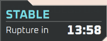
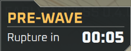
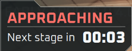
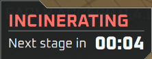
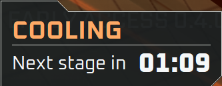
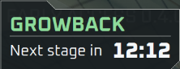

All six stages, captured in game. Times shown are examples.
01 / RUPTURE COUNTDOWN
Know how long you have.
See the current rupture stage and its remaining time.
- Follows the game simulation and pauses with it.
- Stage colours make the current phase easy to recognise.
- Move the timer and lock it in place.